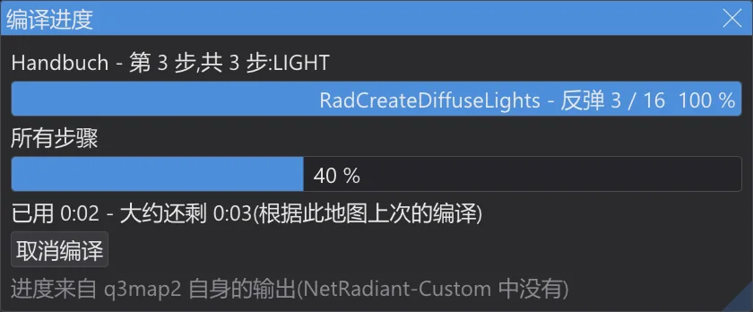
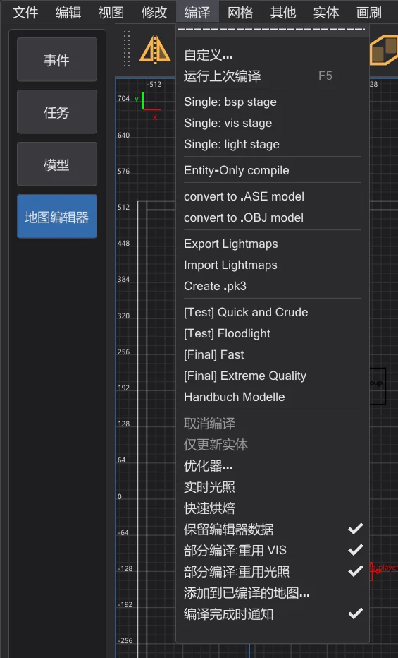
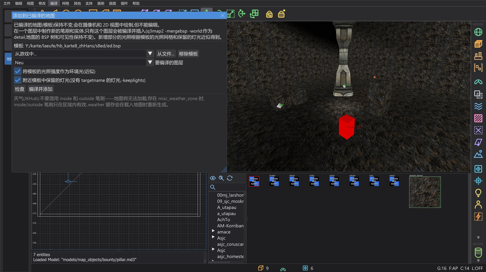
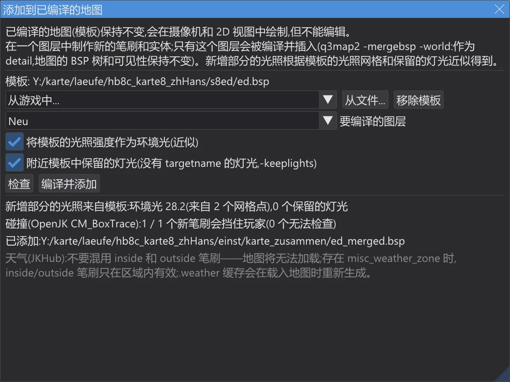

地图与场景
地图编辑器:编译进度与部分编译
查看编译进行到哪一步、还需要多久;只重新编译改动过的部分——结果与完整编译相同;以及在不重新编译地图的情况下,向已编译的地图添加新部分。
编译进度#

- 当 编译 菜单中的编译运行时,编译进度 窗口显示条目、步骤及其阶段(BSP、VIS、LIGHT)、q3map2 当前所处的阶段及其自身进度——即 q3map2 输出的点和数字,或反弹次数——一个覆盖全部步骤的进度条以及时间。
- 剩余时间:用某个条目第一次编译地图时,根据正在运行的阶段估算,并显示为“至少”。从第二次编译起,剩余时间来自这张地图用这个条目上一次编译的时间——各步骤的时间保存在设置文件夹的
karte_bauzeiten.json中。 - 编译完成后,控制台会列出每个步骤的时间,并与上一次编译比较:
1 BSP: 0.4 s(上次编译 0.5 秒,-20 %)。 - 窗口中的 取消编译 会停止 q3map2,与 编译 > 取消编译 相同。
- 编译 > 编译完成时通知(默认开启):编译结束时如果 JK Studio 不是前台窗口,它在任务栏上的按钮会闪烁——没有声音,没有对话框。
进度来自 q3map2 自身的输出;光照贴图很多的阶段或很长的反弹会跳跃式前进。剩余时间的准确度取决于上一次编译的可比性——换了条目、换了开关或电脑繁忙都会改变它。
部分编译#

编译 菜单中的两个开关让每次编译都复用自上次以来没有变化的部分。结果与完整编译的 .bsp 逐字节相同——ctest q3map2_teilbau 会用两种方式编译地图并比较文件。
- 部分编译:重用 VIS:
-vis带-bhedvisreuse运行。bhed_q3map2 把可见性连同门户文件和开关一起保存在<地图>.bhedvis中。如果门户(.prt)、开关和_farplanedist键都相同,它会直接复制可见性而不重新计算——控制台显示 visibility reused。门户只会因结构笔刷而改变;实体、detail 笔刷、曲面片和纹理都不会改变门户。 - 部分编译:重用光照:
-light带-bhedlightcache运行。bhed_q3map2 把每张光照贴图和光照网格连同其全部输入的指纹——几何体、照到它的灯光、开关——保存在<地图>.bhedlight中。下一次运行只计算指纹发生变化的光照贴图:移动一盏灯,只有它照到的光照贴图会重新计算。控制台会显示有多少来自缓存:light cache: 9 of 14 lightmaps …。 - 只改了后期处理——
-gamma、-exposure、-compensate、-saturation、-contrast、-gridscale、-gridambientscale或 worldspawn 键_minlight、_minvertexlight、_mingridlight:所有光照贴图和网格都来自缓存,只重新运行后期处理,不追踪任何光线。
使用
-bounce 时不使用光照缓存:反弹光把每张光照贴图与其他所有光照贴图联系在一起。多线程时 -vis 本身每次运行都可能略有不同(参见 地图编辑器:速度与实时光照);复用的可见性是上一次运行的结果——如需与完整编译比较,请使用 -vis -threads 1。缓存文件位于地图旁边;删除它们即可强制完整编译。它们不应放入 .pk3。添加到已编译的地图#

- 1
打开你要在其中制作新增部分的源地图(或新地图),选择 编译 > 添加到已编译的地图。模板可以是游戏中的地图(从游戏中)或任意 .bsp(从文件)。它会在摄像机和 2D 视图中绘制,无法选择或修改。
- 2
在单独的图层中制作新增部分——笔刷、曲面片、实体——并在 要编译的图层 中选择该图层(默认选中当前图层)。
- 3
检查 会编译该图层并执行下面的检查,但不添加任何内容。编译并添加 编译该图层(
-meta、-light -fast -samples 2),并用q3map2 -mergebsp -world -fixnames插入:作为 detail 插入模板的世界中,模板的 BSP 树、可见性和光照贴图保持不变。结果是设置文件夹内karte_zusammen文件夹中的<模板>_merged.bsp;模板本身不会被修改。

检查哪些内容
- 天气笔刷:不能混用
system/inside和system/outside——合并后同时含有两者的地图无法加载。如果会出现这种情况,则不添加任何内容。 - 天气区域:如果模板或新增部分含有
misc_weather_zone实体,inside 和 outside 笔刷只在区域内有效;新增部分中位于所有区域之外的天气笔刷会收到警告,因为它们不起作用。 - 名称:新增部分中与模板相同的
target或targetname会被-fixnames重命名——模板与新增部分之间的关联会丢失。对话框会列出这些名称。 - 限制:合并后的 .bsp 会像在优化器中一样计数;超过上限即为错误。
- 碰撞:合并后的 .bsp 会载入游戏的碰撞模型(移植自 OpenJK
CM_BoxTrace);每个新的实体笔刷都必须在玩家碰撞盒从外面走进来时挡住它。
新增部分的光照是近似的:q3map2 无法针对模板的几何体为新增部分计算光照。将模板的光照强度作为环境光(近似) 取新增部分周围模板光照网格的平均值作为环境光,附近模板中保留的灯光(没有 targetname 的灯光,-keeplights) 使用模板中保留下来的、没有 targetname 的灯光——只有用 保留编辑器数据(
-keeplights)编译的地图才有。模板的光照网格不会更新——新增部分附近的模型和玩家的光照与之前相同。最终版本请完整编译。来自 JKHub 天气笔刷讨论帖的天气规则:一张地图中绝不要混用 inside 和 outside 笔刷;有天气区域时,笔刷只在区域内有效;游戏在载入地图时会重新生成
.weather 缓存文件,因此不必删除旧文件。